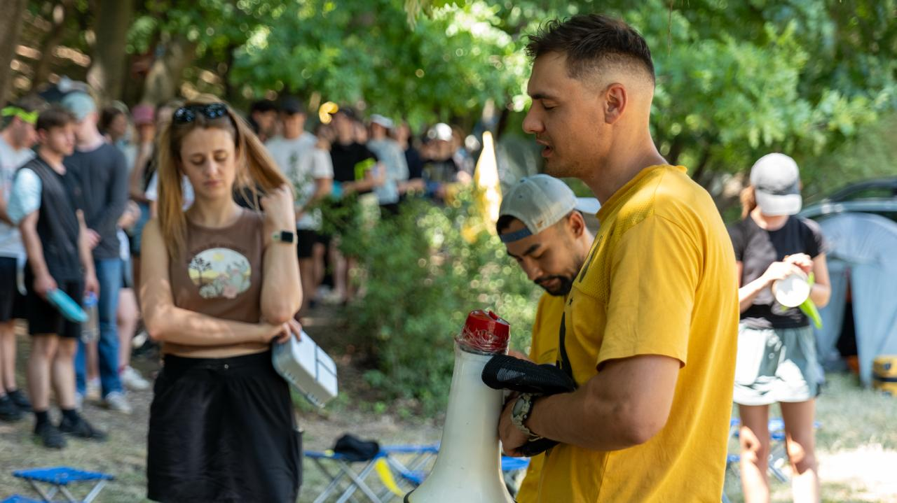

Reach
We engage young people through English Clubs, Summer Camps and other special events. We create a welcoming space to build friendships and share the Gospel through youth meetings and different projects.
We invest in the next generation, make disciples, and multiply churches across Moldova.

We engage young people through English Clubs, Summer Camps and other special events. We create a welcoming space to build friendships and share the Gospel through youth meetings and different projects.
We walk alongside new believers through small groups and one-on-one mentorship. We help them study God's Word and become committed disciples who live out their faith daily.
We empower leaders to plant home churches. Our vision is to establish one fellowship for every 1,000 people. We equip believers to open their homes and lead spiritual communities.
In addition to serving in Cru, we have been the leaders of the Target Life youth ministry in our church. We grow a young generation of leaders, who will have the same vision — win Moldova for Christ! We dream that more young people would come to know Jesus!
Our disciples "work" side by side with us on different projects and Evangelical events. We encourage them to start their own discipleship groups or home churches. It is a joy to see how God works in their lives!